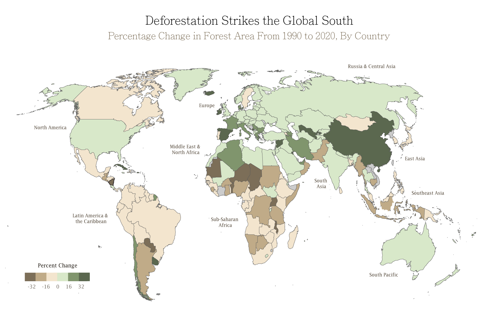
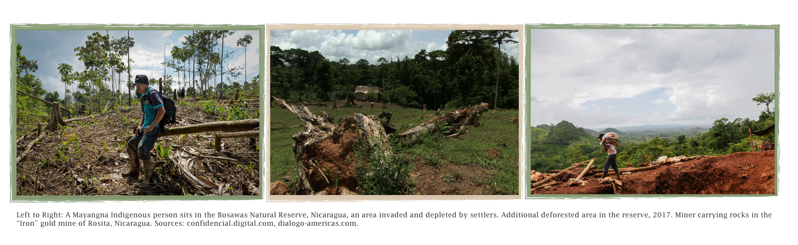
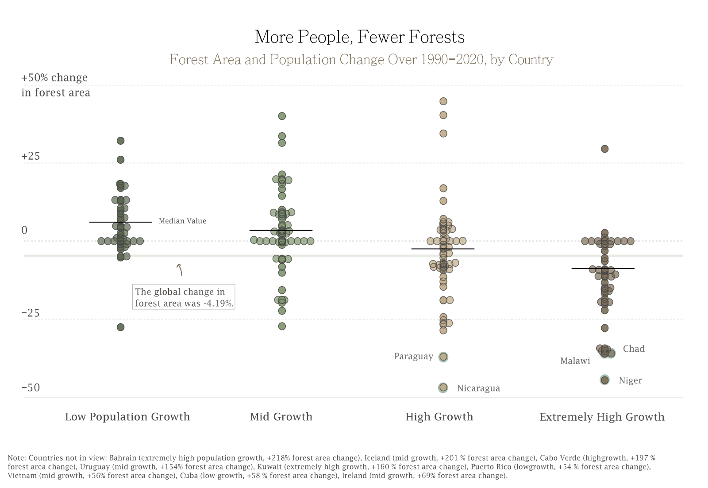

By Elizabeth Duchan - May 2, 2024
Global deforestation is on the rise. Since 1990, we’ve lost a staggering 420 million hectares of forest due to agriculture, mining, and urban development — the equivalent of 27 soccer fields vanishing every minute. Although a jarring fact, this rapid depletion might not come as a surprise; the world has been bearing its negative effects on biodiversity, flooding, greenhouse gas emissions, and global warming for centuries.
The resonating impacts of deforestation are well documented, but more complex questions persist: what are the factors informing its growing prevalence, and where should we be focusing our attention most? And perhaps most importantly, how can we leverage this knowledge to enact change?
The topic is expansive and ever-evolving (and with that, a bit daunting), but every effort towards better understanding deforestation brings us one step closer to preserving invaluable forest resources.
Despite the global trend of forest loss over the past three decades, analyzing individual countries reveals a surprising (if not counterintuitive) finding: deforestation is not universal. Some countries’ forest growth skyrocketed upwards, while other countries, largely in the global south, experienced substantial decline over time.
What is causing this difference? Some sources posit that agricultural and cattle expansion is the driving force behind this loss, particularly the rising demand for beef, soy, and palm oil. Others point to a more fundamental trend: that increases in population have spurred infrastructure development and urbanization.
For example, our data shows that Nicaragua (bolded on the map) experienced one of the highest levels of deforestation over the past thirty years, with nearly a 47% loss in forest area. This decrease can be attributed to many interconnected, complex factors: intensifying conflicts between settlers and Indigenous communities, clashes between government forces and dissidents, and a rise in both population and poverty. Amid this tension, massive amounts of Nicaragua’s Caribbean forests have been overtaken by settlers, ranchers, loggers, and miners.
Nicaragua highlights not only the multitude of contributing factors to consider when dissecting country trends, but also the inherent ways in which they inform one another. Put simply, deforestation does not exist in a vacuum.
Let’s tackle a piece of this important puzzle by diving deeply into one likely contributor: population change.
This graph confirms an overarching correlation between population and deforestation: countries facing increased population growth over the thirty-year period also tended to have greater forest area loss. We also see that the countries experiencing the highest deforestation rates -- Nicaragua, Niger, Paraguay, Malawi, and Chad -- fell into population categories of “high growth” and “extremely high growth,” strengthening the relevance of this factor.
These findings are certainly not exhaustive, but do encourage further conversations about the ways in which economic, political, and social dynamics intersect to drive deforestation. In the future, we can look even more granularly to uncover how different regions, states, and cities differ in their various trends. There’s an abundance of information out there, and with that, so much potential for combating this pertinent issue.
Finally, here are some helpful resources for ways in which we can help day-to-day.
𖠰 Five Ways to Stop Deforestation in Our Food | WWF-UK
𖠰 Solutions to Deforestation - Greenpeace USA
𖠰 Ways to Help Stop Deforestation and Take Action | Earth Optimism
𖠰 Fifteen Strategies How to Reduce and Prevent Deforestation
The main data source used for this project was a dataset from the Food and Agriculture Organization of the United Nations, entitled “Global Forest Insights 1990-2020.” Country-level population data came from Wordometers, titled “Countries in the World by Population.” Lastly, global map data came from opendatasoft’s “World Administrative Boundaries - Countries and Territories.”